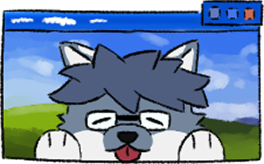

Heya! I'm
QUANG ANH
...QA for shorts
On the Internet, I'm usually known as
QwertyAndrew... or sometimes zep.ty.
I'm a Vietnamese multidisciplinary Media Designer who likes
making weird little things somewhere between
art, education, tech, and play.
Things I like making:
- 3D stuff with Blender
- Music & sound with FL Studio
- Photography with my Sony A6300
- Video Games with Unity and Roblox Studio
- ...and probably some other nonsense, like this website!
When I'm not glued to my laptop, I'm either sketching something silly, or taking stock photos, or just wandering around looking for something interesting.
Thx 4 checkin mah portfolio!!1!
